Organizacja
czeka na Twoją decyzjęTu zbierasz i porządkujesz wiedzę o kliencie: kim jest, dokąd zmierza, co go blokuje i skąd to wiesz — zanim cokolwiek mu zaproponujesz.
Co się w tym module zmieniło dzisiaj 21
Boczne menu modułu ma poprawione dwie literówki: „Blokery celów" i „Przyczyny i blokery" (było „Blockery"). To samo menu stoi na każdym ekranie Organizacji. na 20 ekranach
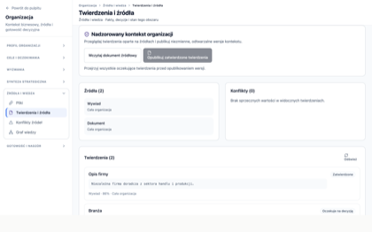
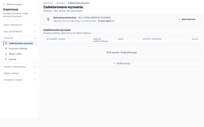
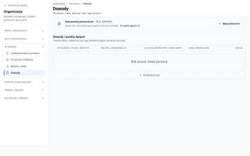
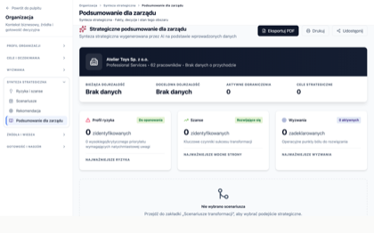
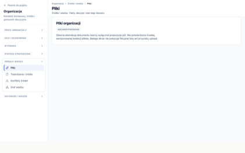
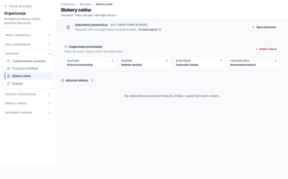
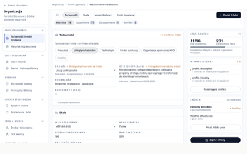
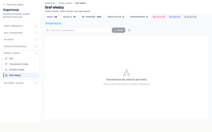
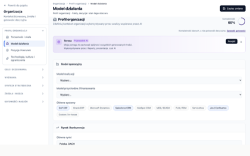
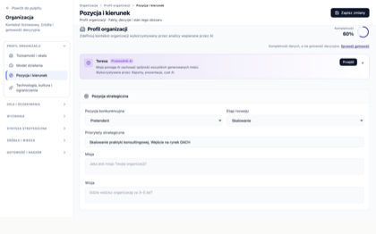
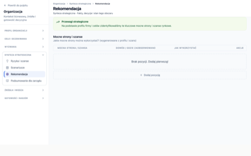
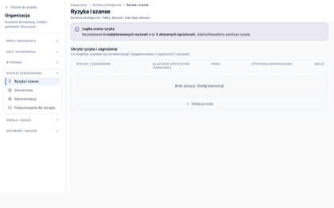
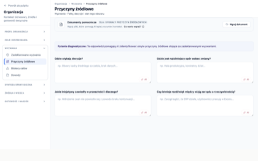
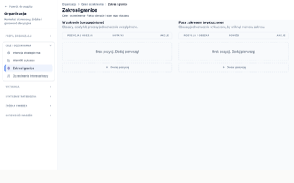
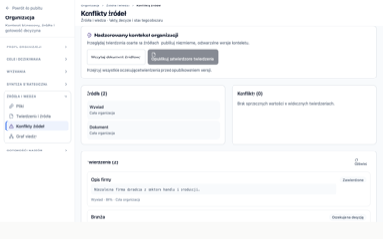
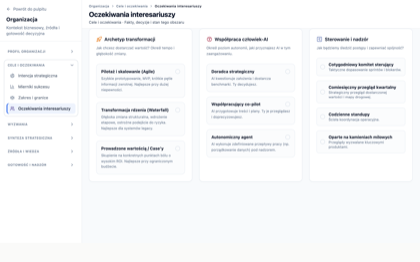
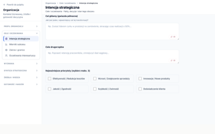
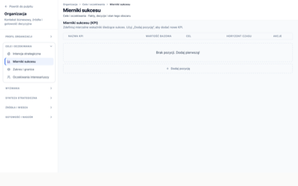
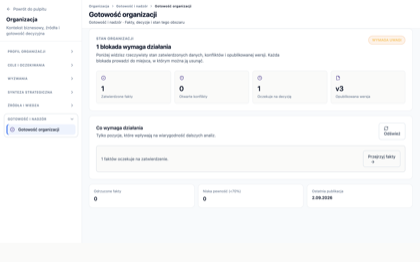
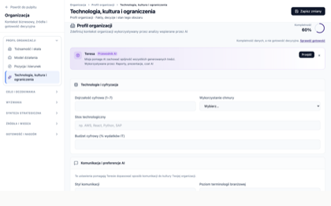
Boczne menu ma poprawione literówki („Blokery celów", „Przyczyny i blokery"), a plakietka REKOMENDOWANY nad kartą scenariusza przestała być czerwona i jest zielona — rekomendacja to dobra wiadomość, nie alarm. na 1 ekranie
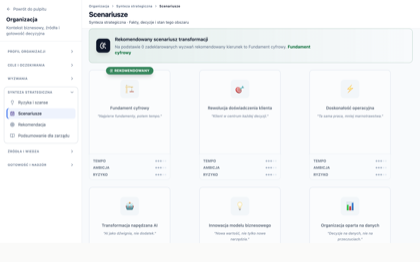
Co w tym module zostaje otwarte
Nic. Nie zostawiłeś tu żadnej uwagi, której byśmy nie domknęli.
Czego ten moduł nie obejmuje 1
Te ekrany nie szły do odbioru — świadomie ich nie pokazywaliśmy. Zamknięcie modułu ich nie dotyczy:
- Organizacja — redesign 21→11, komplet D